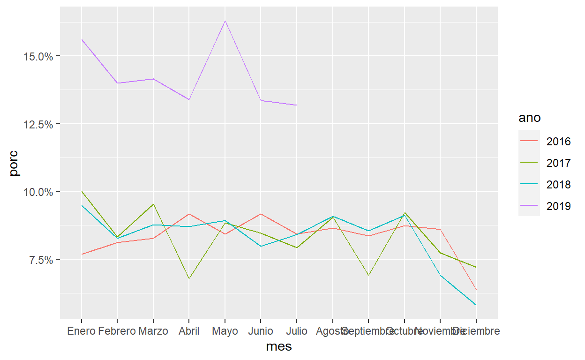
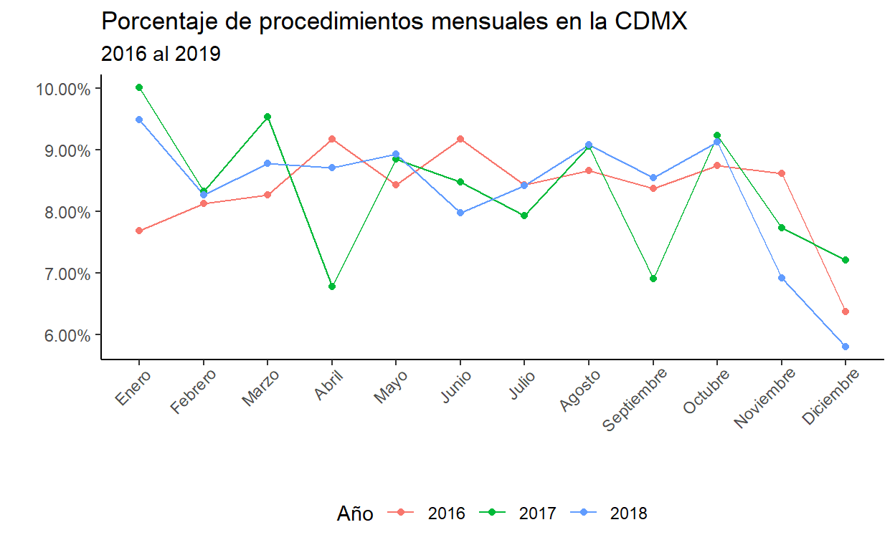
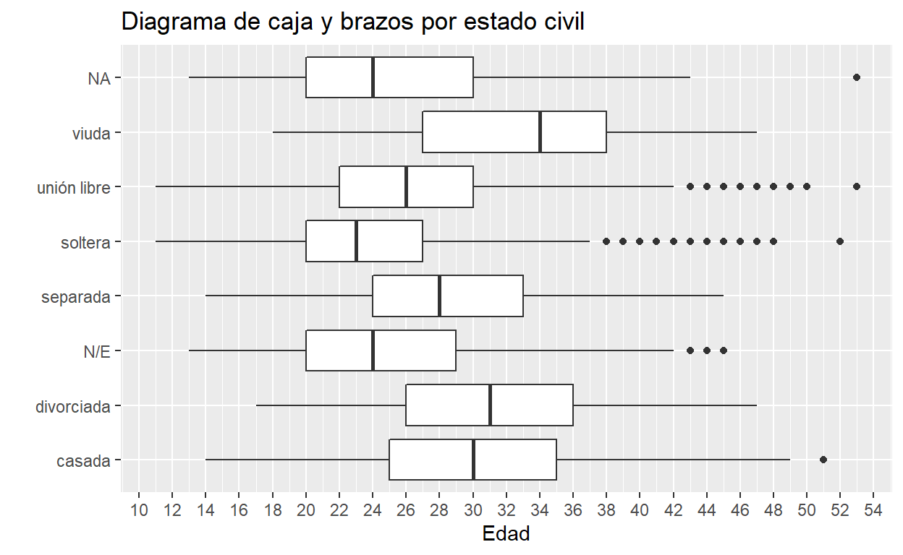
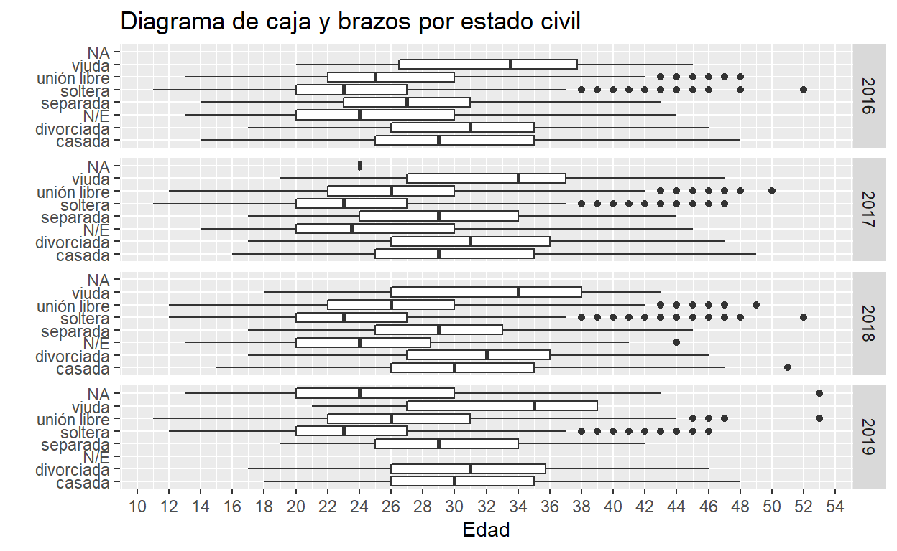
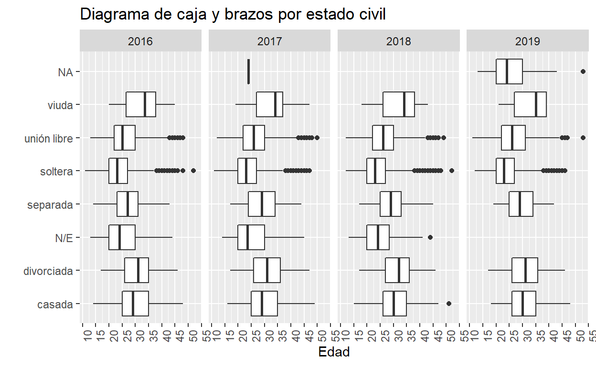
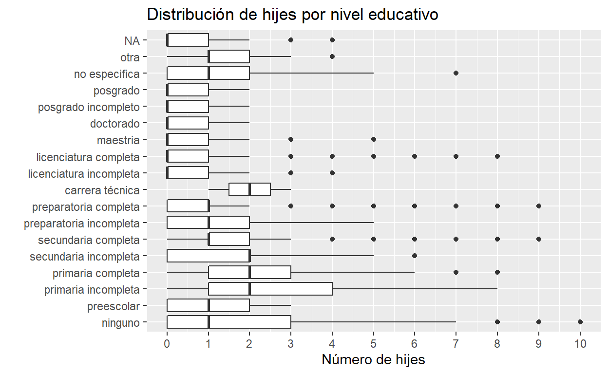

Primer análisis de datos sobre Interrupción Legal del Embarazo en la CDMX.
Este post sale a destiempo por no organizarme bien. Si van a regresar a windows recuerden no usar carácteres especiales :|
El 24 de abril, es decir el viernes de la semana pasada, en la Ciudad de México se cumplieron 13 años de la despenalización de la Interrupción Legal del Embarazo. Adicionalmente, desde el año pasado la ADIP ha abierto los datos respecto a las interrupciones en la Ciudad de México en clínicas y hospitales de la Secretaría de la Salud de la Ciudad de México.
Por eso, vamos a revisar la base de datos actualizada hasta el 24 de abril pasado. La base más actualizada la pueden encontrar en el sitio de la ADIP. Sin embargo, por facilidad y para replicar los mismos resultados, los datos con los que trabajaré están alojados en mi cuenta de google drive. Vamos a hacer algunas tablas y gráficas.
origen <- "https://docs.google.com/spreadsheets/d/e/2PACX-1vQ-27iXWPJK4vgK1EzzvIRL2vgNt296XyMFNMAZFkWqHBCUdLKtu4u4Da5WPLuH7AG0NNYFjija2g92/pub?gid=138072597&single=true&output=csv"
datos <- read.csv(origen, stringsAsFactors = F, fileEncoding = "UTF-8")
Entonces, origen es el objeto con la dirección del archivo de google drive, datos es el objeto que lee el archivo csv (la base de datos). La función read.csv tiene varios argumentos (como todas las funciones para leer bases de datos). stringsAsFactors es para que las variables que son texto no se conviertan en factores (un factor es una variable de categorías mutuamente excluyentes). Mientras que el argumento fileEncoding es para leer bien los acentos y carácteres especiales. UTF-8 y Windows 1252 son los más comunes.
Si quieren saber que significan las variables, pueden descargar el diccionario de datos. Un Diccionario de datos es el estándar para explicar los nombres de las variables.
Ahora, los paquetes. Usualmente, los paquetes van al principio del código y van juntos.
Vamos a hacer tablas con el conteo por las variables. Como es un ejemplo, trataré de hacer cosas basicas. Esto se hace con el paquete janitor. Además de hacer tablas, el paquete Janitor “limpia” las bases de datos. En este caso, vamos a cambiar los nombres de las variables: la variable Año suele tener
datos <- clean_names(datos)
names(datos)
[1] "ano" "mes"
[3] "cve_hospital" "fingreso"
[5] "autoref" "edocivil_descripcion"
[7] "edad" "desc_derechohab"
[9] "nivel_edu" "ocupacion"
[11] "religion" "parentesco"
[13] "entidad" "alc_o_municipio"
[15] "menarca" "fsexual"
[17] "fmenstrua" "sememb"
[19] "nhijos" "gesta"
[21] "naborto" "npartos"
[23] "ncesarea" "nile"
[25] "consejeria" "anticonceptivo"
[27] "c_num" "motiles"
[29] "h_fingreso" "desc_servicio"
[31] "p_semgest" "p_diasgesta"
[33] "p_consent" "procile"
[35] "s_complica" "panticoncep" tabyl(datos, ano)
ano n percent
2016 18084 0.2916633
2017 17588 0.2836637
2018 17247 0.2781640
2019 9084 0.1465090Esta primera tabla muestra el número de procedimientos por año y el porcentaje del total.
tabyl(datos, ano, mes)
ano Abril Agosto Diciembre Enero Febrero Julio Junio Marzo Mayo
2016 1658 1566 1151 1389 1469 1524 1658 1495 1524
2017 1192 1592 1267 1759 1464 1395 1490 1676 1556
2018 1502 1566 1000 1635 1426 1451 1375 1513 1540
2019 1217 0 0 1418 1272 1198 1213 1286 1480
Noviembre Octubre Septiembre
1557 1580 1513
1360 1622 1215
1192 1573 1474
0 0 0En este caso, la tabla no sale tan chida. Por esa razón vamos a hacerla con dplyr.
Esta tabla se hizo con Dplyr. Este paquete nos permite manipular bases de datos de manera sencilla. Hay que pensar el procesamiento como pasos secuenciales. Es igual que la rutina de la mañana: te despiertas, revisas el teléfono, vas al baño, desayunas, etc.
En este caso, a la base “datos” le aplicaremos distintas operaciones gracias al operador pipe (%>%). Es decir a la base de datos le haremos un mutate(crear una nueva variable) luego ( %>% ) agrupamos las variables año y mes; para finalizar ( %>% ) le hacemos un summarise (colpasamos la base de datos) en ese caso sumaremos la variable cont (que es ponerle un 1 a cada renglón) por año y mes.
Como ya habrán notado, los meses están desordenados.
graf <- datos %>%
mutate(cont = 1) %>%
group_by(ano, mes) %>%
summarise(total = sum(cont)) %>%
ungroup() %>%
group_by(ano) %>%
mutate(tot = sum(total),
porc = total/tot) %>%
ungroup() %>%
mutate(
mes = factor(mes,
levels = c("Enero", "Febrero", "Marzo", "Abril", "Mayo", "Junio",
"Julio", "Agosto", "Septiembre", "Octubre", "Noviembre", "Diciembre")),
ano = factor(ano,
levels = c(2016:2019))
)
Este código calcula el porcentaje por mes y año. Además, ordena los meses y el año como factores.
ggplot(graf, aes(x = mes, y = porc, group = ano)) +
geom_line(aes(color = ano)) +
scale_y_continuous(labels = scales::percent_format())

Esta gráfica muestra el porcentaje por mes y por año. Como podrán notar, 2019 es muy alto. Esto es debido a que la formula es sumar el total de procedimientos por mes al año, y divide el total por mes sobre el total por año. Por esta razón, en el 2019 el porcentaje es tan alto, solamente hay información hasta julio.
En el caso de scales:: , esta es una forma de utilizar una función de un paquete sin tener que poner library. ¿Qué por qué necesitamos esto? A veces cargar un paquete es demasiado para nuestra computadora, piensa que un paquete es como un foco, no prendes un foco que no utilizaras prontamente.
graf2 <- datos %>%
mutate(cont = 1) %>%
filter(ano < 2019) %>%
group_by(ano, mes) %>%
summarise(total = sum(cont)) %>%
ungroup() %>%
group_by(ano) %>%
mutate(tot = sum(total),
porc = total/tot) %>%
ungroup() %>%
mutate(
mes = factor(mes,
levels = c("Enero", "Febrero", "Marzo", "Abril", "Mayo", "Junio",
"Julio", "Agosto", "Septiembre", "Octubre", "Noviembre", "Diciembre")),
ano = factor(ano,
levels = c(2016:2018))
)
Quitamos el año en cuestión y volvemos a graficar.En este caso, no filtramos utilizando el mismo objeto debido a que un factor no se puede filtrar.
ggplot(graf2, aes(x = mes, y = porc, group = ano)) +
geom_line(aes(color = ano)) +
geom_point(aes(color = ano)) +
scale_y_continuous(labels = scales::percent_format()) +
labs(title = "Porcentaje de procedimientos mensuales en la CDMX",
subtitle = "2016 al 2019",
x = "", y = "",
color = "Año") +
theme_classic() +
theme(axis.text.x = element_text(angle = 45, hjust = 0.9),
legend.position = "bottom")

En este caso, agregamos nuevos argumentos en theme. axis.text.x es para modificar como vemos las eetiquetas del eje de las x (el eje horizontal). En este caso, lo giré 45° y lo ajusté para que no se sobreponga.
Aunque son cosas sencillas, pueden ser interesantes para pensar y presentar puntos. Y aprovechando que tenemos una base con tantas variables, podemos jugar con los datos y ver que otras cosas aparecen. Por ejemplo:
ggplot(datos, aes(x = edocivil_descripcion, y = edad)) +
geom_boxplot() +
labs(title = "Diagrama de caja y brazos por estado civil",
x = "", y = "Edad") +
scale_y_continuous(breaks = seq(10, 60, by = 2)) +
coord_flip()

Un diagrama de caja y brazoss (boxplot) nos muestra de manera gráfica los cuartiles de una variable. Es decir, los extremos de la caja representan el primer y tercer cuartil. Y la barra dentro de la caja representa el promedio. Mientras que los puntos representan outliers o valores atípicos.
Como ya vimos cambiar la escala del eje es fácil, pero también podemos agregarle más detalle para interpretarla mejor: breaks permite modificar la escala, en este caso utilicé una secuencaia (seq) del 10 al 60 de 2 en 2.
Por esta razón, esta gráfica muestra la distribución por edad de acuerdo al estado civil reportado para el procedimiento. Algo que salta a la vista es el hecho de que la mujer más joven sometida a un procedimiento es de 12 años.
Por último, vamos a hacer esta misma gráfica, pero la separaremos por años.
ggplot(datos, aes(x = edocivil_descripcion, y = edad)) +
geom_boxplot() +
labs(title = "Diagrama de caja y brazos por estado civil",
x = "", y = "Edad") +
scale_y_continuous(breaks = seq(10, 60, by = 2)) +
coord_flip() +
facet_grid(ano ~ .)

facet puede ser utilizado de manera fija (vertical u horizontal) con facet_grid o ajustarlo dentro de un rectangulo con facet_wrap. Los argumentos son los mismos en ambos casos: (variable1 ~ variable2). Con esto quiero decir que puede separar las graficas por otras variables. En este caso, vemos los diagramas de caja y brazos por año. Pero así se ve muy feo, probemos otra configuración de los facet
ggplot(datos, aes(x = edocivil_descripcion, y = edad)) +
geom_boxplot() +
labs(title = "Diagrama de caja y brazos por estado civil",
x = "", y = "Edad") +
scale_y_continuous(breaks = seq(10, 60, by = 5)) +
theme(axis.text.x = element_text(angle = 90)) +
coord_flip() +
facet_grid(cols = vars(ano))

Aquí le específicamos a R que ponga un número de columnas igual al de nuestra variable de interés (como no la podemos “pasar” directamente utilizamos vars de dplyr).
datos %>%
mutate(
nivel_edu = factor(nivel_edu,
levels =
c("ninguno", "preescolar", "primaria incompleta", "primaria completa",
"secundaria incompleta", "secundaria completa", "preparatoria incompleta",
"preparatoria completa", "carrera técnica", "licenciatura incompleta",
"licenciatura completa","maestria", "doctorado", "posgrado incompleto",
"posgrado", "no especifica", "otra"))
) %>%
ggplot(aes(x = nivel_edu, y = nhijos)) +
geom_boxplot() +
scale_y_continuous(breaks = seq(0, 10, by = 1)) +
labs(title = "Distribución de hijes por nivel educativo",
x = "", y = "Número de hijes") +
coord_flip()

De manera similar, podemos observar el número de hijes por nivel educativo de las pacientes. Hay muchísimos valores atípicos.
Y con estas herramientas ahora ustedes pueden realizar sus primeros análisis y empezar a jugar con otras bases de datos.